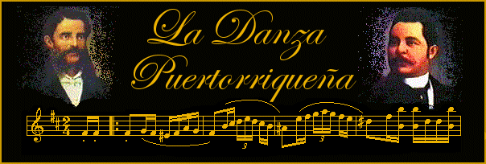
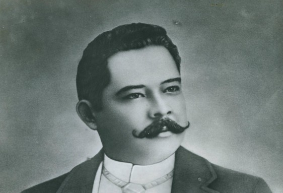
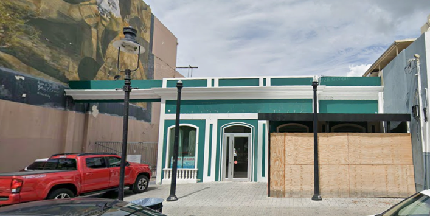
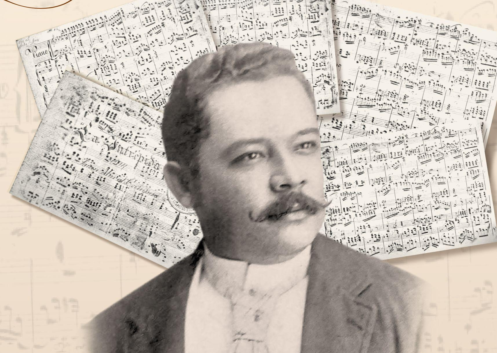
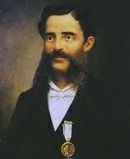
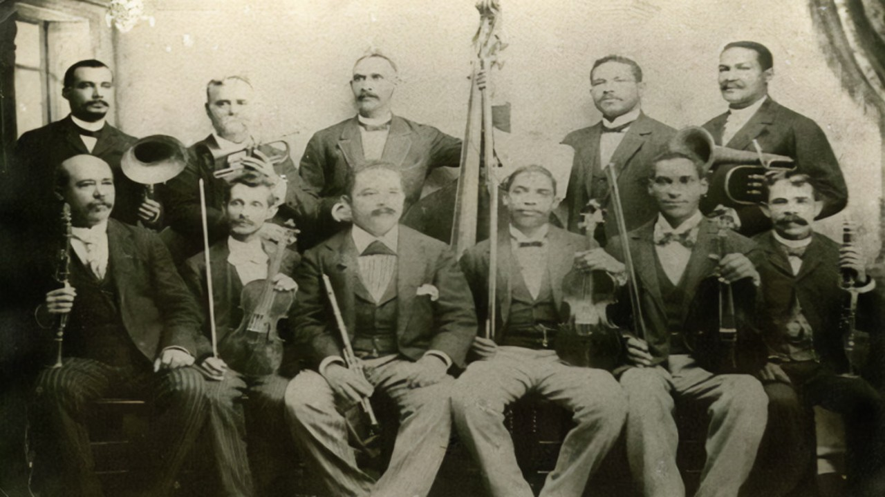
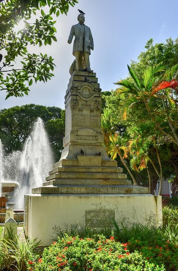
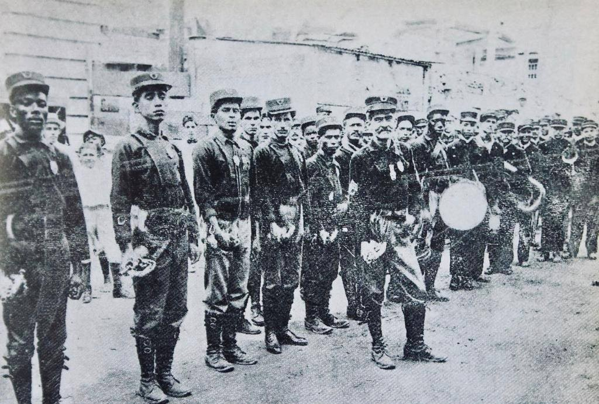

|

Biografía de Juan Morel Campos

Contexto Histórico
- Ponce se funda en 1692.
- Se declara ciudad en 1877.
- Ponce era un centro cultural y económico muy importante del siglo XIX.
- Allí se encontraban las personas y lugares más importantes e influyentes de la isla.
|

|

|
- Nace el 16 de mayo de 1857 en Ponce, Puerto Rico.
- Hijo de:
- Manuel Morel Araujo (dominicano)
- Juana de Dios Campos (venezolana)
- Nació a una familia de cierto prestigio.

- Inicia estudios musicales a los 8 años.
- Ya componía danzas a los 14 años bajo la mentoría de Manuel Tavárez.
- El campaneo de la Iglesia lo inspiró a estudiar música.
Estudios en la Música
| Estudio |
Mentor |
| Estudios Básicos | Francisco Borja Gómez |
| Solfeo y Bombardino | Vicente Juan |
| Armonía, Flauta y Piano | Antonio Egipciaco |
| Armonía, Composición, Contrapunto y Piano | Manuel Gregorio Tavárez |
| Cornetín, Contrabajo y Bombardino | Bandas Cívicas y Militares |
| Instrumentación y Dirección | Banda del Batallón de Cazadores del Regimiento de Madrid |
| Casi todos los instrumentos de metal de la orquesta y el órgano | Mentores no Especificados |
Desarrollo de la Danza Puertorriqueña

- La danza existía previamente en la forma de la habanera.
- Manuel Gregorio Tavárez reinventa la danza a una forma elegante y fina.
- Morel la convierte en una forma bailable.
- Las composiciones de Morel definen el estilo que hoy se reconoce como danza puertorriqueña.
Carrera Profesional

- La feria de exposiciones del 1882 definió el camino de su carrera.
- Forma su primera orquesta.
- Gana reconocimiento y prestigio entre públicos apoderados.
- Se consolida como una figura importante de la música puertorriqueña.
- Funda la Banda del Cuerpo de Bomberos de Ponce.
- Lleva la música a espacios públicos, democratizando su acceso.
- Dirige orquestas y compone para eventos sociales y culturales.

- Sufre un ataque cardíaco mientras dirigía en el Teatro La Perla.
- Fallece el 12 de mayo de 1896, a los 38 años.
- Su muerte temprana dejó una obra inmensa y un legado muy importante.

- Fundó más de 3 orquestas.
- Compuso más de 550 piezas en muchos géneros:
- Danzas - 283
- Piezas Religiosas - 137
- Melodías - 129
- Música Sinfónica - 3
- Marchas Sinfónicas - 10
- Mazurcas - 6
- Marchas Fúnebres - 8
- Pasodobles - 9
- Polkas - 5
- Romanzas - 5
- Valses - 15
- Zarzuelas - 4
- Guarachas - 7
- Gavotas - 1
- Himnos - 1
- Chotis - 1
- Galopes - 2
- Popurrí - 1
- Letanías - 6
- Perfeccionó la danza puertorriqueña.
- Sus partituras se vendieron fuera de Puerto Rico.
- Considerado uno de los compositores más importantes del Caribe.
- Forma parte de la identidad musical puertorriqueña.
- Su música sigue interpretándose aún hoy en día.
Análisis Armónico de “Tu Regreso”
- Tiene 11 sistemas.
- Prevalecen los acordes de novena donde todos son A.
- Destaca el uso de las notas repetidas.
- Todas las cadencias son perfectas.
- Tiene un solo motivo en el Paseo.
- Su forma es tripartita.
Total de Notas de Adorno:
22 de Paso
13 Bordaduras
7 Anticipatorias
14 Apoyaturas
4 Cambiatas
2 Pedales
2 Escaapatorias
6 Retardos
Leyenda:
Nota de Paso – Azul
Bordadura – Rojo
Anticipatoria – Verde
Escapatoria – Violeta
Cambiata – Anaranjado
Retardo – Rosa
Pedal – Marrón
Apoyatura – Amarillo

1 Bordadura
3 Paso
2 Anticipatorias
4 Apoyaturas

1 Bordadura
3 Paso
2 Apoyaturas

1 Apoyatura

2 Apoyaturas

1 Bordadura
2 Paso
2 Apoyaturas

1 Paso
1 Apoyatura

2 Bordaduras
4 Paso
1 Cambiata
4 Retardos

6 Bordaduras
3 Paso
1 Anticipatoria
2 Apoyaturas
2 Cambiatas
2 Pedales
1 Escapatoria

1 Bordadura
1 Paso
2 Anticipatorias
2 Retardos
1 Escapatoria

1 Bordadura
2 Paso
2 Anticipatorias

3 Paso
1 Cambiata
Referencias:
Isla Caribe. (n.d.-a). Ruta Virtual Juan Morel Campos. YouTube. https://www.youtube.com/watch?v=eGuhJ6U7fvg&t=1560s
Isla Caribe. (n.d.-b). 38. Juan Morel Campos. YouTube. https://www.youtube.com/watch?v=EBDOMOXNriI
Isla Caribe. (n.d.-c). Isla Caribe Podcast Ep. 135 - Celebrando la Danza Puertorriqueña, Juan Morel Campos, y el Podcast. YouTube. https://www.youtube.com/watch?v=DTU9X2Jb_7A
Isla Caribe. (n.d.-d). Historia, Vestimenta y Arte en la Danza Puertorriqueña. YouTube. https://www.youtube.com/watch?v=vP1Q6Gt8L6w
Isla Caribe. (n.d.-e). Ep 103 Elisa Tavárez y la Danza Puertorriqueña. YouTube. https://www.youtube.com/watch?v=7ifQAcgP2EA
Isla Caribe. (n.d.-f). Isla Caribe Podcast Ep. 1: La Danza Puertorriqueña. YouTube. https://www.youtube.com/watch?v=fof9-lrtvQs
Allende Goitía, Dr. N. (2012, April 13). Juan Morel Campos. EnciclopediaPR. https://enciclopediapr.org/content/juan-morel-campos/
El Hogar de la Danza Puertorriqueña. (n.d.). Juan Morel Campos. https://www.ladanza.com/morel.htm
El Hogar de la Danza Puertorriqueña. (n.d.). Manuel Gregorio Tavárez. Manuel G. Tavárez. https://www.ladanza.com/tavarez.htm
Santiago, J. (2021, January 2). Biznieta de Morel profundiza en Datos Biográficos. Fundación Nacional para la Cultura Popular. https://prpop.org/2021/01/biznieta-de-morel-profundiza-en-datos-biograficos/
Juan Morel Campos. ACEMLA. (2023, November 15). https://acemla.com/composers/juan-morel-campos/
Juan Morel Campos. Autógrafo TV. (2025, March 11). https://autografo.tv/juan-morel-campos/
Hispánica, H. (n.d.). Real Academia de la Historia. Juan Nepomuceno Morel Campos. https://historia-hispanica.rah.es/biografias/32277-juan-nepomuceno-morel-campos
Puerto Rico, D. (n.d.). Juan Morel Campos: El Musicólogo de Puerto Rico. https://danzasdepuertorico.com/juan-morel-campos-el-musicologo-de-puerto-rico/
Quiñones, F. J. (2022, May 10). Ponce, Morel Campos y la Danza Puertorriqueña. https://fjmusicpr.com/desde-el-pentagrama-blog/blog/ponce-morel-campos-y-la-danza-puertorriquena
FamilySearch.org. (n.d.). Juan Nepomuceno Morel Campos. https://ancestors.familysearch.org/es/GX7Q-QQQ/juan-nepomuceno-morel-campos-1857-1896
Encuentro Puertorriqueño de Creación Musical. (n.d.). Juan Morel Campos. https://publish.illinois.edu/epcm-2023/juan-morel-campos/
|